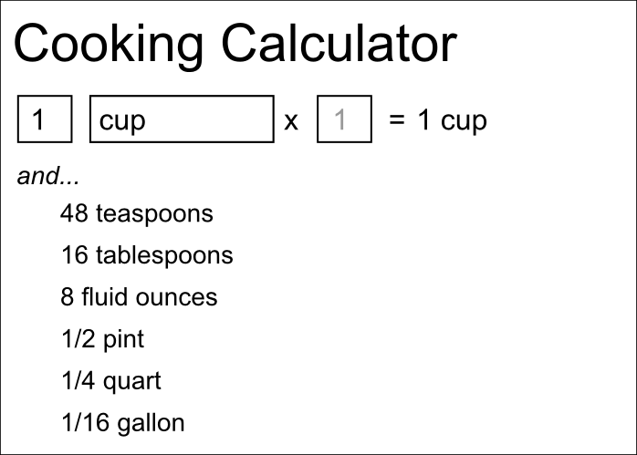
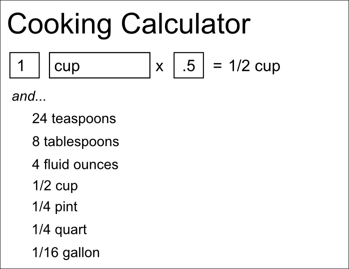
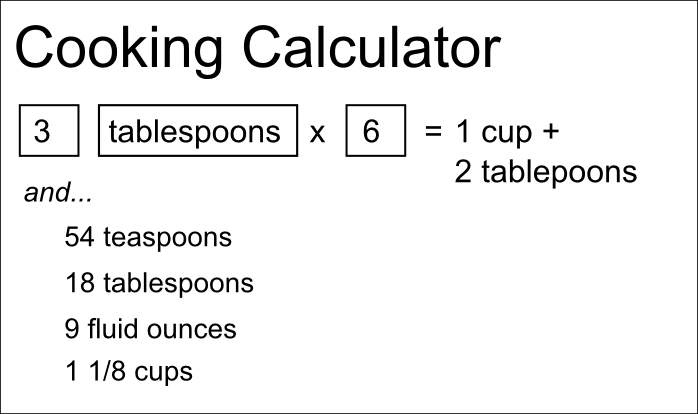

My project will be to build a cooking calculator that converts various units of cooking measurement from one unit to another. It will allow you to enter any unit and see all the other units that unit can reasonably be converted to. For instance, you could enter a number of tablespoons and see how many teaspoons, ounces, and cups that equals. It should allow you to enter fractions as either decimals or standard "x/x" fractions, and should display results as fractions (since that's what's used in recipes). Time allowing, I would also like to add functionality to scale up a measurement (eg. "1.5 teaspoons x 3"), and to highlight the "best" unit to use (eg. "1 cup + 2 tablespoons" instead of "18 tablespoons").


